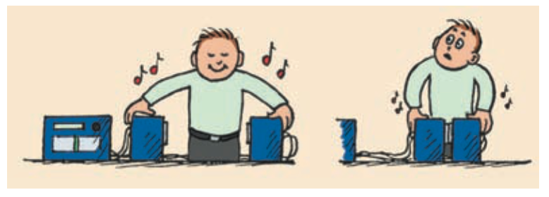

1. When two sound waves arrive in phase, what kind of interference tends to occur?
2. What kind of interference is used by active noise-canceling systems to reduce a detected sound?
3. What are beats in sound?
4. Write the beat-frequency relationship for two nearby frequencies.
5. What does it mean for two waves to be out of phase in the context of cancellation?
6. Use the speaker image to explain why equal-frequency waves can produce a quiet location when their phase relationship makes their pressure changes oppose.

7. Two tuning forks vibrate at 440 Hz and 446 Hz. Determine the beat frequency.
8. A musician hears 7 beats per second while comparing a reference tone of 500 Hz with a nearby string. What is the magnitude of the frequency difference?
9. A noise-canceling headphone produces a pressure pattern intended to oppose an incoming tone. Explain why timing and frequency matching matter for strong cancellation.
10. Two tones start 9 Hz apart and are adjusted until they are 2 Hz apart. Compare the beat rates and explain what the slower beat indicates about tuning.
11. A student says, “Noise cancellation destroys the sound energy.” Critique the claim using superposition, detected amplitude, and energy-transfer language.
12. A musician hears beats slowing as one string is adjusted. Explain what this evidence says about the two frequencies and how the player knows the tuning is improving.
13. Two in-phase sound waves tend to produce
14. Noise-canceling headphones primarily rely on
15. Beats are heard when
16. The beat frequency for 440 Hz and 444 Hz is
17. If beat rate decreases while tuning, the source frequencies are
18. Complete destructive interference at a point requires equal contributions that are
19. Which statement about noise cancellation is best?
20. Two equal tones arrive in phase at a microphone. The resulting amplitude is likely